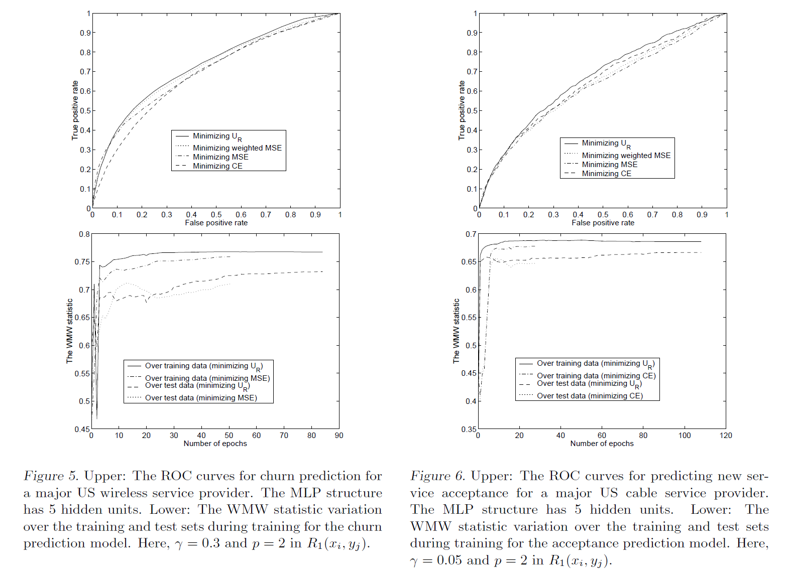

Yan et al., 2003, Optimizing classifier performance via an approximation to the Wilcoxon-Mann-Whitney statistic, International Conference on Machine Learning. pdf
Introduction
- Relationship between AUC and WMW statistic
- Minimizing cross entropy or mean squared error does not necessarily maximize the area under the ROC curve (AUC)
- Let \(\{ x_0 , \cdots , x_{m-1} \}\) as the classifier outputs for \(m\) positive examples, and \(\{ y_0 , \cdots , y_{n-1} \}\) for \(n\) negative examples
- \(X\) and \(Y\) are random variable
- Wilcoxon-Mann-Whitney (WMW) statistic \(U\) is an estimator of AUC \(\textit{P} (X > Y)\)
\[U = \frac{ \sum_{i=0}^{m-1} \sum_{j=0}^{n-1} I(x_i , y_j)}{mn}\]
\[\begin{equation*} I(x_i , y_j) = \begin{cases} 1 & x_i > y_j \\ 0 & \text{otherwise} \end{cases} \end{equation*}\]
- Difficulty of optimizing AUC directly
- AUC itself is non-differentiable and cannot be optimized by gradient based methods
- In the information retrieval field, some related work exists on optimizing ranks
Proposed method
- Differentiable approximation to \(I\)
- A larger \(\beta\) would make \(S\) close to \(I\), but this bring in numerical prolbem during optimization because of steep gradients
- During the process of minimizing \(R_1\), when a positive samples has a higher output than a negative sample by a margin \(\gamma\), this pair of samples will not contribute to the objective function
- The influence of the training samples is adaptively adjusted according to the pairwise comparisons during training
- Positive margin \(\gamma\) is need for better generalization
- Maximizing \(R_2\) is ineffective because it makes the optimization focus on maximizing the difference between \(x_i\) and \(y_j\) rather than on moving more pairs of \(x_i\) and \(y_j\) to satisfy \(x_i - y_j > \gamma\)

\[S(x_i, y_j) = \frac{1}{1 + \exp{\{ - \beta (x_i - y_j) \}}}\]
\[\begin{equation*} R_1 (x_i , y_j) = \begin{cases} (-(x_i - y_j - \gamma))^p & x_i - y_j < \gamma \\ 0 & \text{otherwise} \end{cases} \end{equation*}\]
\[\begin{equation*} R_2 (x_i , y_j) = \begin{cases} (x_i - y_j - \gamma)^p & x_i - y_j > \gamma \\ 0 & \text{otherwise} \end{cases} \end{equation*}\]
Experiment
- Churn prediction: 140,000 customers, 6% churn rate, 55 features, positive weight 2 in weighted MSE
- Cross-sell acceptance prediction: 260,00 customers, 0.6% positive sample, 41 features, positive weight 10 in weighted MSE

Further study
- Hand and Till, 2001, A simple generalisation of the area under the ROC curve for multiple class classification problems, Machine learning. pdf
Note
- Other approximation (margin-based loss functions)
- Determination of \(\gamma\) (in view of the difficulty of a classification problem)
- Determination of \(\beta\) and \(p\) (I think they have a similar effect to …)